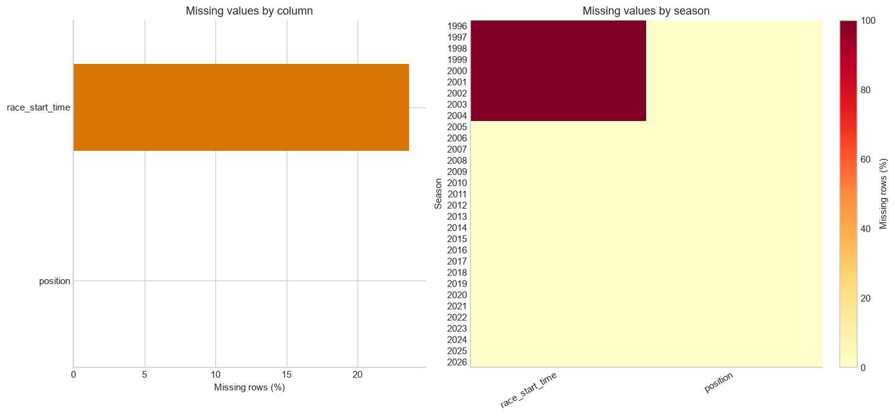
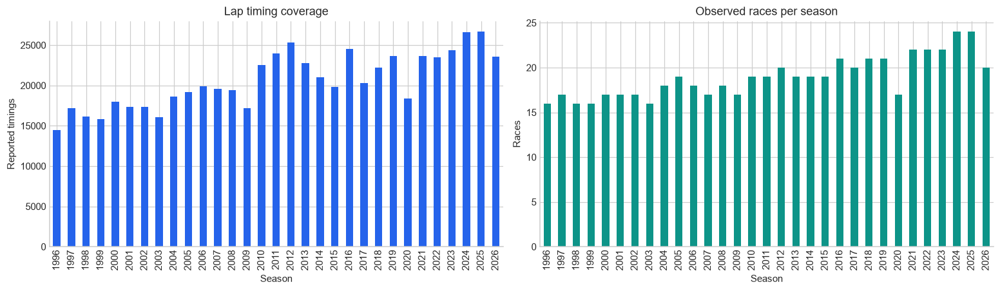
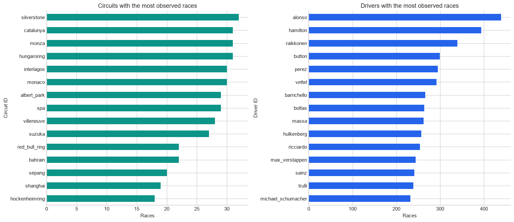
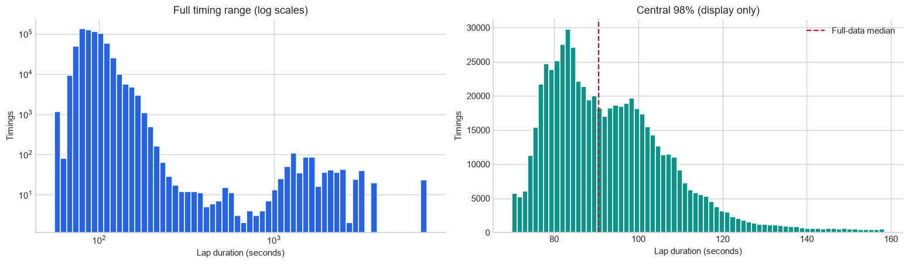
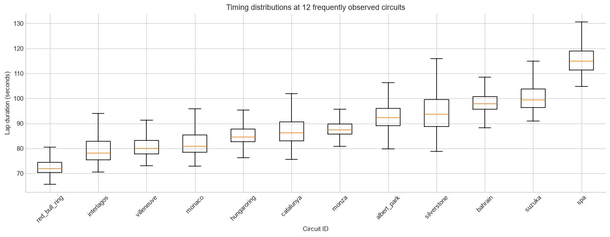
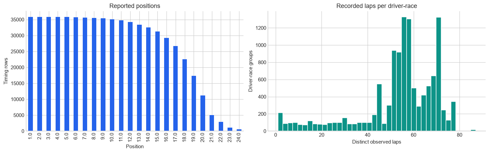
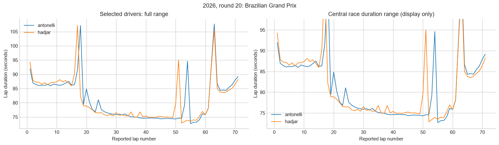
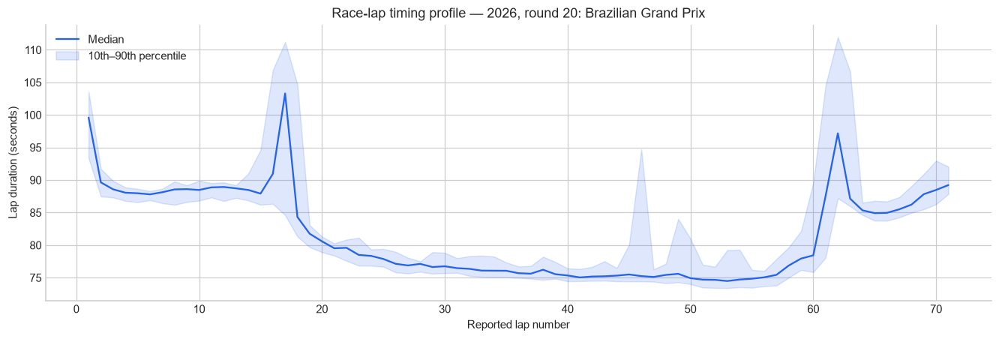

Lap times: exploratory data analysis
This notebook explores only data/raw/lap_times.csv. One row represents a
reported lap timing for one driver in one race. Its expected unique key is
(season, round, driver_id, lap).
We investigate coverage, missing values, timing formats, duplicates, lap
continuity, unusual durations, and patterns within a race. The final section
saves a processed copy to data/processed/laps/lap_times.csv, including
lap_time_seconds, for use by subsequent notebooks. The source CSV remains
unchanged.
Questions
- Which seasons, races, circuits, and drivers are represented?
- Are identifiers, dates, positions, and timing values internally consistent?
- Where are missing values and gaps concentrated?
- How do timing distributions change by circuit and race lap?
- Which observations need review before a later pace analysis?
Run cells from top to bottom. The final season may be a partial snapshot. Without another source, coverage describes what is present; it cannot establish whether every scheduled race or completed lap is available.
1. Setup and loading
Select a Python kernel with pandas, matplotlib, and ipykernel installed.
From the project root, install them if needed with
python -m pip install -r requirements.txt ipykernel.
No installation runs automatically inside this notebook.
Show code · cell 2
from pathlib import Path
import math
import re
import pandas as pd
import matplotlib.pyplot as plt
from IPython.display import Markdown, display
pd.set_option("display.max_columns", 20)
pd.set_option("display.max_colwidth", 65)
pd.set_option("display.float_format", lambda value: f"{value:,.3f}")
plt.style.use("seaborn-v0_8-whitegrid")
plt.rcParams.update({"figure.figsize": (12, 4), "figure.dpi": 110,
"axes.spines.top": False, "axes.spines.right": False})
# Support execution from the repository root, notebooks/, or a subdirectory.
project_root = next(
(path for path in (Path.cwd(), *Path.cwd().parents)
if (path / "data" / "raw" / "lap_times.csv").is_file()),
None,
)
if project_root is None:
raise FileNotFoundError("Run this notebook inside the f1-driver-vs-car repository.")
csv_path = project_root / "data" / "raw" / "lap_times.csv"
text_columns = ["race_name", "race_date", "race_start_time", "circuit_id",
"circuit_name", "driver_id", "lap_time"]
raw = pd.read_csv(csv_path, dtype={column: "string" for column in text_columns},
low_memory=False)
if raw.empty:
raise ValueError("The source CSV contains no lap timings.")
race_key = ["season", "round"]
driver_race_key = race_key + ["driver_id"]
lap_key = driver_race_key + ["lap"]
required_columns = set(lap_key + text_columns + ["position"])
missing_columns = required_columns.difference(raw.columns)
if missing_columns:
raise ValueError(f"Missing required columns: {sorted(missing_columns)}")
print(f"Source: {csv_path.relative_to(project_root)}")
print(f"Size: {csv_path.stat().st_size / 1024**2:,.1f} MiB")
print(f"pandas {pd.__version__}")Matplotlib is building the font cache; this may take a moment.
Source: data\raw\lap_times.csv Size: 63.2 MiB pandas 3.0.3
2. Structure and first observations
position is the reported position at a lap, not the finishing position.
lap_time is a duration, while race_start_time is an event start time.
Driver and circuit identifiers should remain strings.
| Column | Meaning |
|---|---|
season, round |
Race identifier within a season |
race_name, race_date, race_start_time |
Repeated race metadata |
circuit_id, circuit_name |
Circuit identifier and label |
driver_id |
Driver identifier |
lap |
Reported lap number |
position |
Reported position at that lap; may be missing |
lap_time |
Original reported duration as text |
Show code · cell 4
overview = pd.Series({
"Rows": len(raw),
"Columns": raw.shape[1],
"Seasons": raw["season"].nunique(),
"Races": len(raw[race_key].drop_duplicates()),
"Circuits": raw["circuit_id"].nunique(),
"Drivers": raw["driver_id"].nunique(),
"Driver-race combinations": len(raw[driver_race_key].drop_duplicates()),
"First date (source text)": raw["race_date"].min(),
"Last date (source text)": raw["race_date"].max(),
}, name="Value")
display(overview.to_frame())
display(raw.head())
display(raw.tail())| Value | |
|---|---|
| Rows | 639293 |
| Columns | 11 |
| Seasons | 31 |
| Races | 588 |
| Circuits | 42 |
| Drivers | 149 |
| Driver-race combinations | 11938 |
| First date (source text) | 1996-03-10 |
| Last date (source text) | 2026-11-08 |
| season | round | race_name | race_date | race_start_time | circuit_id | circuit_name | driver_id | lap | position | lap_time | |
|---|---|---|---|---|---|---|---|---|---|---|---|
| 0 | 1996 | 1 | Australian Grand Prix | 1996-03-10 | <NA> | albert_park | Albert Park Grand Prix Circuit | villeneuve | 1 | 1.000 | 1:43.702 |
| 1 | 1996 | 1 | Australian Grand Prix | 1996-03-10 | <NA> | albert_park | Albert Park Grand Prix Circuit | damon_hill | 1 | 2.000 | 1:44.243 |
| 2 | 1996 | 1 | Australian Grand Prix | 1996-03-10 | <NA> | albert_park | Albert Park Grand Prix Circuit | irvine | 1 | 3.000 | 1:44.981 |
| 3 | 1996 | 1 | Australian Grand Prix | 1996-03-10 | <NA> | albert_park | Albert Park Grand Prix Circuit | michael_schumacher | 1 | 4.000 | 1:45.188 |
| 4 | 1996 | 1 | Australian Grand Prix | 1996-03-10 | <NA> | albert_park | Albert Park Grand Prix Circuit | alesi | 1 | 5.000 | 1:46.506 |
| season | round | race_name | race_date | race_start_time | circuit_id | circuit_name | driver_id | lap | position | lap_time | |
|---|---|---|---|---|---|---|---|---|---|---|---|
| 639288 | 2026 | 20 | Brazilian Grand Prix | 2026-11-08 | 17:00:00Z | interlagos | Autódromo José Carlos Pace | russell | 71 | 4.000 | 1:29.283 |
| 639289 | 2026 | 20 | Brazilian Grand Prix | 2026-11-08 | 17:00:00Z | interlagos | Autódromo José Carlos Pace | antonelli | 71 | 5.000 | 1:29.159 |
| 639290 | 2026 | 20 | Brazilian Grand Prix | 2026-11-08 | 17:00:00Z | interlagos | Autódromo José Carlos Pace | piastri | 71 | 6.000 | 1:30.505 |
| 639291 | 2026 | 20 | Brazilian Grand Prix | 2026-11-08 | 17:00:00Z | interlagos | Autódromo José Carlos Pace | leclerc | 71 | 7.000 | 1:32.037 |
| 639292 | 2026 | 20 | Brazilian Grand Prix | 2026-11-08 | 17:00:00Z | interlagos | Autódromo José Carlos Pace | lawson | 71 | 8.000 | 1:32.109 |
Show code · cell 5
column_profile = pd.DataFrame({
"dtype": raw.dtypes.astype(str),
"non_null": raw.notna().sum(),
"missing": raw.isna().sum(),
"missing_pct": raw.isna().mean().mul(100),
"distinct_non_null": raw.nunique(),
"memory_MiB": raw.memory_usage(index=False, deep=True).div(1024**2),
})
display(column_profile)
raw.info(memory_usage="deep")
display(raw.describe(include="number"))| dtype | non_null | missing | missing_pct | distinct_non_null | memory_MiB | |
|---|---|---|---|---|---|---|
| season | int64 | 639293 | 0 | 0.000 | 31 | 4.877 |
| round | int64 | 639293 | 0 | 0.000 | 24 | 4.877 |
| race_name | string | 639293 | 0 | 0.000 | 45 | 16.498 |
| race_date | string | 639293 | 0 | 0.000 | 588 | 10.974 |
| race_start_time | string | 488342 | 150951 | 23.612 | 34 | 9.145 |
| circuit_id | string | 639293 | 0 | 0.000 | 42 | 10.107 |
| circuit_name | string | 639293 | 0 | 0.000 | 42 | 18.685 |
| driver_id | string | 639293 | 0 | 0.000 | 149 | 9.536 |
| lap | int64 | 639293 | 0 | 0.000 | 87 | 4.877 |
| position | float64 | 639277 | 16 | 0.003 | 24 | 4.877 |
| lap_time | string | 639293 | 0 | 0.000 | 77371 | 9.753 |
<class 'pandas.DataFrame'> RangeIndex: 639293 entries, 0 to 639292 Data columns (total 11 columns): # Column Non-Null Count Dtype --- ------ -------------- ----- 0 season 639293 non-null int64 1 round 639293 non-null int64 2 race_name 639293 non-null string 3 race_date 639293 non-null string 4 race_start_time 488342 non-null string 5 circuit_id 639293 non-null string 6 circuit_name 639293 non-null string 7 driver_id 639293 non-null string 8 lap 639293 non-null int64 9 position 639277 non-null float64 10 lap_time 639293 non-null string dtypes: float64(1), int64(3), string(7) memory usage: 104.2 MB
| season | round | lap | position | |
|---|---|---|---|---|
| count | 639,293.000 | 639,293.000 | 639,293.000 | 639,277.000 |
| mean | 2,012.215 | 10.167 | 30.052 | 9.690 |
| std | 8.800 | 5.667 | 18.402 | 5.533 |
| min | 1,996.000 | 1.000 | 1.000 | 1.000 |
| 25% | 2,005.000 | 5.000 | 14.000 | 5.000 |
| 50% | 2,013.000 | 10.000 | 29.000 | 9.000 |
| 75% | 2,020.000 | 15.000 | 44.000 | 14.000 |
| max | 2,026.000 | 24.000 | 87.000 | 24.000 |
3. Missing values
Do not fill missing positions with a mean or carry the previous position forward. Missing start times may reflect historical availability and need not invalidate an otherwise usable timing. The heatmap below shows whether missingness is concentrated in particular seasons.
Show code · cell 7
missing_summary = column_profile[["missing", "missing_pct"]].sort_values(
"missing", ascending=False)
display(missing_summary)
columns_with_missing = missing_summary.index[missing_summary["missing"].gt(0)].tolist()
if columns_with_missing:
missing_by_season = (raw[columns_with_missing].isna()
.groupby(raw["season"]).mean().mul(100))
fig, axes = plt.subplots(1, 2, figsize=(13, 6), layout="constrained")
missing_summary.loc[columns_with_missing, "missing_pct"].sort_values().plot.barh(
ax=axes[0], color="#d97706")
axes[0].set(xlabel="Missing rows (%)", ylabel="", title="Missing values by column")
image = axes[1].imshow(missing_by_season, aspect="auto", vmin=0, vmax=100,
cmap="YlOrRd")
axes[1].set_xticks(range(len(columns_with_missing)), columns_with_missing,
rotation=30, ha="right")
axes[1].set_yticks(range(len(missing_by_season)), missing_by_season.index)
axes[1].set(title="Missing values by season", ylabel="Season")
axes[1].grid(False)
fig.colorbar(image, ax=axes[1], label="Missing rows (%)")
plt.show()
else:
print("No missing values were found.")
display(raw.loc[raw["position"].isna(), lap_key + ["position", "lap_time"]])| missing | missing_pct | |
|---|---|---|
| race_start_time | 150951 | 23.612 |
| position | 16 | 0.003 |
| season | 0 | 0.000 |
| race_name | 0 | 0.000 |
| round | 0 | 0.000 |
| circuit_id | 0 | 0.000 |
| race_date | 0 | 0.000 |
| circuit_name | 0 | 0.000 |
| driver_id | 0 | 0.000 |
| lap | 0 | 0.000 |
| lap_time | 0 | 0.000 |


| season | round | driver_id | lap | position | lap_time | |
|---|---|---|---|---|---|---|
| 212654 | 2008 | 4 | bourdais | 6 | NaN | 1:25.999 |
| 241612 | 2009 | 13 | alguersuari | 17 | NaN | 1:27.846 |
| 242148 | 2009 | 13 | buemi | 50 | NaN | 1:25.564 |
| 252560 | 2010 | 6 | bruno_senna | 58 | NaN | 1:20.130 |
| 252724 | 2010 | 6 | chandhok | 69 | NaN | 1:19.553 |
| 252725 | 2010 | 6 | trulli | 69 | NaN | 1:19.340 |
| 340983 | 2014 | 1 | massa | 2 | NaN | 1:40.287 |
| 341417 | 2014 | 1 | vettel | 26 | NaN | 1:37.064 |
| 341486 | 2014 | 1 | maldonado | 30 | NaN | 1:34.766 |
| 341869 | 2014 | 1 | jules_bianchi | 55 | NaN | 1:35.635 |
| 440580 | 2018 | 14 | brendon_hartley | 6 | NaN | 1:27.009 |
| 440800 | 2018 | 14 | alonso | 18 | NaN | 1:25.229 |
| 441282 | 2018 | 14 | ricciardo | 46 | NaN | 1:25.692 |
| 444556 | 2018 | 18 | alonso | 5 | NaN | 1:40.933 |
| 444679 | 2018 | 18 | grosjean | 12 | NaN | 1:41.982 |
| 445291 | 2018 | 18 | ricciardo | 49 | NaN | 1:40.433 |
4. Duplicate keys and internal validity
Exact duplicates repeat every field. Repeated lap keys may instead contain conflicting values and require investigation. We also check positive integer lap numbers and positions, dates, whitespace, and consistency of metadata repeated across rows belonging to the same race.
Show code · cell 9
exact_duplicate_mask = raw.duplicated()
repeated_key_mask = raw.duplicated(lap_key, keep=False)
numeric_values = raw[["season", "round", "lap", "position"]].apply(
pd.to_numeric, errors="coerce")
invalid_numeric = (numeric_values.le(0) | numeric_values.mod(1).ne(0)) & numeric_values.notna()
unparseable_numeric = raw[numeric_values.columns].notna() & numeric_values.isna()
parsed_dates = pd.to_datetime(raw["race_date"], format="%Y-%m-%d", errors="coerce")
integrity_checks = pd.Series({
"Exact duplicate rows (extra copies)": int(exact_duplicate_mask.sum()),
"Rows belonging to repeated lap keys": int(repeated_key_mask.sum()),
"Rows missing any lap-key field": int(raw[lap_key].isna().any(axis=1).sum()),
"Rows with non-positive or fractional numeric fields": int(invalid_numeric.any(axis=1).sum()),
"Rows with unparseable numeric fields": int(unparseable_numeric.any(axis=1).sum()),
"Non-null dates that could not be parsed": int((raw["race_date"].notna() & parsed_dates.isna()).sum()),
}, name="Rows")
display(integrity_checks.to_frame())
display(raw.loc[repeated_key_mask].head(20))
text_checks = pd.DataFrame({
"whitespace_at_edges": [int(raw[c].ne(raw[c].str.strip()).fillna(False).sum())
for c in text_columns],
"blank_non_null_strings": [int(raw[c].str.strip().eq("").fillna(False).sum())
for c in text_columns],
}, index=text_columns)
display(text_checks)
metadata_columns = ["race_name", "race_date", "race_start_time", "circuit_id", "circuit_name"]
metadata_counts = raw.groupby(race_key, dropna=False)[metadata_columns].nunique(dropna=False)
metadata_conflicts = metadata_counts.gt(1).any(axis=1)
print(f"Races with conflicting metadata: {metadata_conflicts.sum():,}")
display(metadata_counts.loc[metadata_conflicts].head(20))| Rows | |
|---|---|
| Exact duplicate rows (extra copies) | 0 |
| Rows belonging to repeated lap keys | 0 |
| Rows missing any lap-key field | 0 |
| Rows with non-positive or fractional numeric fields | 0 |
| Rows with unparseable numeric fields | 0 |
| Non-null dates that could not be parsed | 0 |
| season | round | race_name | race_date | race_start_time | circuit_id | circuit_name | driver_id | lap | position | lap_time |
|---|
| whitespace_at_edges | blank_non_null_strings | |
|---|---|---|
| race_name | 0 | 0 |
| race_date | 0 | 0 |
| race_start_time | 0 | 0 |
| circuit_id | 0 | 0 |
| circuit_name | 0 | 0 |
| driver_id | 0 | 0 |
| lap_time | 0 | 0 |
Races with conflicting metadata: 0
| race_name | race_date | race_start_time | circuit_id | circuit_name | ||
|---|---|---|---|---|---|---|
| season | round |
5. Parse timing durations without losing valid formats
The source can contain seconds (58.160), minutes and seconds (1:43.702),
or hours, minutes and seconds (2:05:05.152). A parser restricted to a single
format would lose valid observations. We retain the original text and add
lap_time_seconds to an analysis copy. Invalid formats remain missing and are
listed explicitly; no rows are dropped.
Show code · cell 11
colon_count = raw["lap_time"].str.count(":")
format_name = colon_count.map({0: "seconds", 1: "minutes:seconds", 2: "hours:minutes:seconds"})
format_name = format_name.fillna("missing or unsupported")
format_summary = (raw.assign(time_format=format_name)
.groupby("time_format", dropna=False)
.agg(rows=("lap_time", "size"), example=("lap_time", "first")))
format_summary["share_pct"] = format_summary["rows"].div(len(raw)).mul(100)
display(format_summary)
duration_pattern = re.compile(r"(?:[0-9]+:){0,2}[0-9]{1,2}\.[0-9]{3}")
def lap_time_to_seconds(value):
'''Parse a reported duration; reject invalid formats and clock components.'''
if pd.isna(value) or duration_pattern.fullmatch(value) is None:
return float("nan")
parts = value.split(":")
if float(parts[-1]) >= 60 or (len(parts) == 3 and int(parts[-2]) >= 60):
return float("nan")
total = 0.0
for part in parts:
total = total * 60 + float(part)
return total
# Small reference checks protect the three distinct source formats.
for text, expected in [("58.160", 58.160), ("1:43.702", 103.702),
("2:05:05.152", 7505.152), ("53:24.155", 3204.155)]:
assert math.isclose(lap_time_to_seconds(text), expected, abs_tol=1e-9)
assert math.isnan(lap_time_to_seconds("1:75.000"))
df = raw.copy()
df["race_date_parsed"] = parsed_dates
df["lap_time_seconds"] = df["lap_time"].map(lap_time_to_seconds)
invalid_time_mask = df["lap_time_seconds"].isna() | df["lap_time_seconds"].le(0)
print(f"Unusable timing durations: {invalid_time_mask.sum():,}")
display(df.loc[invalid_time_mask, lap_key + ["lap_time"]].head(20))
display(df[["lap_time", "lap_time_seconds"]].sample(min(8, len(df)), random_state=42))| rows | example | share_pct | |
|---|---|---|---|
| time_format | |||
| hours:minutes:seconds | 43 | 2:05:05.152 | 0.007 |
| minutes:seconds | 638093 | 1:43.702 | 99.812 |
| seconds | 1157 | 58.160 | 0.181 |
Unusable timing durations: 0
| season | round | driver_id | lap | lap_time |
|---|
| lap_time | lap_time_seconds | |
|---|---|---|
| 390482 | 1:51.048 | 111.048 |
| 447701 | 1:12.329 | 72.329 |
| 223812 | 1:37.920 | 97.920 |
| 123930 | 1:19.176 | 79.176 |
| 36452 | 1:27.398 | 87.398 |
| 567723 | 1:33.162 | 93.162 |
| 582635 | 1:37.741 | 97.741 |
| 387584 | 1:38.130 | 98.130 |
6. Coverage by season, circuit, and driver
Counts below represent observed timings, not an external calendar or an expected number of participants. The latest season can have fewer races because collection is ongoing. Driver lap counts measure exposure in this dataset, not performance.
Show code · cell 13
races = df[race_key + metadata_columns].drop_duplicates()
season_summary = df.groupby("season").agg(
lap_timings=("lap", "size"),
observed_races=("round", "nunique"),
drivers=("driver_id", "nunique"),
circuits=("circuit_id", "nunique"),
first_date=("race_date_parsed", "min"),
last_date=("race_date_parsed", "max"),
)
display(season_summary)
fig, axes = plt.subplots(1, 2, figsize=(14, 4), layout="constrained")
season_summary["lap_timings"].plot.bar(ax=axes[0], color="#2563eb")
season_summary["observed_races"].plot.bar(ax=axes[1], color="#0d9488")
axes[0].set(title="Lap timing coverage", xlabel="Season", ylabel="Reported timings")
axes[1].set(title="Observed races per season", xlabel="Season", ylabel="Races")
plt.show()| lap_timings | observed_races | drivers | circuits | first_date | last_date | |
|---|---|---|---|---|---|---|
| season | ||||||
| 1996 | 14431 | 16 | 24 | 16 | 1996-03-10 | 1996-10-13 |
| 1997 | 17206 | 17 | 26 | 17 | 1997-03-09 | 1997-10-26 |
| 1998 | 16175 | 16 | 23 | 16 | 1998-03-08 | 1998-11-01 |
| 1999 | 15804 | 16 | 24 | 16 | 1999-03-07 | 1999-10-31 |
| 2000 | 17977 | 17 | 23 | 17 | 2000-03-12 | 2000-10-22 |
| 2001 | 17357 | 17 | 26 | 17 | 2001-03-04 | 2001-10-14 |
| 2002 | 17350 | 17 | 23 | 17 | 2002-03-03 | 2002-10-13 |
| 2003 | 16043 | 16 | 24 | 16 | 2003-03-09 | 2003-10-12 |
| 2004 | 18608 | 18 | 25 | 18 | 2004-03-07 | 2004-10-24 |
| 2005 | 19204 | 19 | 26 | 19 | 2005-03-06 | 2005-10-16 |
| 2006 | 19920 | 18 | 27 | 18 | 2006-03-12 | 2006-10-22 |
| 2007 | 19563 | 17 | 26 | 17 | 2007-03-18 | 2007-10-21 |
| 2008 | 19450 | 18 | 22 | 18 | 2008-03-16 | 2008-11-02 |
| 2009 | 17188 | 17 | 25 | 17 | 2009-03-29 | 2009-11-01 |
| 2010 | 22537 | 19 | 27 | 19 | 2010-03-14 | 2010-11-14 |
| 2011 | 24008 | 19 | 28 | 19 | 2011-03-27 | 2011-11-27 |
| 2012 | 25343 | 20 | 25 | 20 | 2012-03-18 | 2012-11-25 |
| 2013 | 22779 | 19 | 23 | 19 | 2013-03-17 | 2013-11-24 |
| 2014 | 21025 | 19 | 24 | 19 | 2014-03-16 | 2014-11-23 |
| 2015 | 19855 | 19 | 21 | 19 | 2015-03-15 | 2015-11-29 |
| 2016 | 24513 | 21 | 24 | 21 | 2016-03-20 | 2016-11-27 |
| 2017 | 20307 | 20 | 25 | 20 | 2017-03-26 | 2017-11-26 |
| 2018 | 22252 | 21 | 20 | 21 | 2018-03-25 | 2018-11-25 |
| 2019 | 23625 | 21 | 20 | 21 | 2019-03-17 | 2019-12-01 |
| 2020 | 18400 | 17 | 23 | 14 | 2020-07-05 | 2020-12-13 |
| 2021 | 23688 | 22 | 21 | 21 | 2021-03-28 | 2021-12-12 |
| 2022 | 23529 | 22 | 22 | 22 | 2022-03-20 | 2022-11-20 |
| 2023 | 24386 | 22 | 22 | 22 | 2023-03-05 | 2023-11-26 |
| 2024 | 26574 | 24 | 24 | 24 | 2024-03-02 | 2024-12-08 |
| 2025 | 26657 | 24 | 21 | 24 | 2025-03-16 | 2025-12-07 |
| 2026 | 23539 | 20 | 25 | 20 | 2026-03-08 | 2026-11-08 |


Show code · cell 14
circuit_summary = df.groupby("circuit_id").agg(
circuit_name=("circuit_name", "first"),
lap_timings=("lap", "size"), seasons=("season", "nunique"),
drivers=("driver_id", "nunique"),
)
circuit_race_counts = df[race_key + ["circuit_id"]].drop_duplicates().groupby("circuit_id").size()
circuit_summary["observed_races"] = circuit_race_counts
circuit_summary = circuit_summary.sort_values("observed_races", ascending=False)
driver_summary = df.groupby("driver_id").agg(
lap_timings=("lap", "size"), seasons=("season", "nunique"),
first_season=("season", "min"), last_season=("season", "max"),
)
driver_summary["observed_races"] = df[driver_race_key].drop_duplicates().groupby("driver_id").size()
driver_summary = driver_summary.sort_values("observed_races", ascending=False)
display(circuit_summary.head(15))
display(driver_summary.head(15))
fig, axes = plt.subplots(1, 2, figsize=(14, 6), layout="constrained")
circuit_summary.head(15)["observed_races"].sort_values().plot.barh(ax=axes[0], color="#0d9488")
driver_summary.head(15)["observed_races"].sort_values().plot.barh(ax=axes[1], color="#2563eb")
axes[0].set(title="Circuits with the most observed races", xlabel="Races", ylabel="Circuit ID")
axes[1].set(title="Drivers with the most observed races", xlabel="Races", ylabel="Driver ID")
plt.show()| circuit_name | lap_timings | seasons | drivers | observed_races | |
|---|---|---|---|---|---|
| circuit_id | |||||
| silverstone | Silverstone Circuit | 31853 | 31 | 130 | 32 |
| catalunya | Circuit de Barcelona-Catalunya | 36053 | 31 | 127 | 31 |
| hungaroring | Hungaroring | 40473 | 31 | 129 | 31 |
| monza | Autodromo Nazionale di Monza | 29354 | 31 | 130 | 31 |
| monaco | Circuit de Monaco | 39003 | 30 | 129 | 30 |
| interlagos | Autódromo José Carlos Pace | 37148 | 30 | 129 | 30 |
| spa | Circuit de Spa-Francorchamps | 21552 | 29 | 121 | 29 |
| albert_park | Albert Park Grand Prix Circuit | 26780 | 29 | 127 | 29 |
| villeneuve | Circuit Gilles Villeneuve | 33788 | 28 | 128 | 28 |
| suzuka | Suzuka Circuit | 25663 | 27 | 120 | 27 |
| red_bull_ring | Red Bull Ring | 27114 | 20 | 102 | 22 |
| bahrain | Bahrain International Circuit | 23801 | 21 | 98 | 22 |
| sepang | Sepang International Circuit | 19410 | 20 | 109 | 20 |
| shanghai | Shanghai International Circuit | 20293 | 19 | 96 | 19 |
| hockenheimring | Hockenheimring | 18975 | 18 | 109 | 18 |
| lap_timings | seasons | first_season | last_season | observed_races | |
|---|---|---|---|---|---|
| driver_id | |||||
| alonso | 24032 | 23 | 2001 | 2026 | 439 |
| hamilton | 22825 | 20 | 2007 | 2026 | 394 |
| raikkonen | 18623 | 19 | 2001 | 2021 | 339 |
| button | 16272 | 18 | 2000 | 2017 | 299 |
| perez | 16521 | 15 | 2011 | 2026 | 295 |
| vettel | 16428 | 16 | 2007 | 2022 | 292 |
| barrichello | 14463 | 16 | 1996 | 2011 | 266 |
| bottas | 14613 | 13 | 2013 | 2026 | 264 |
| massa | 14855 | 15 | 2002 | 2017 | 262 |
| hulkenberg | 14216 | 15 | 2010 | 2026 | 257 |
| ricciardo | 14133 | 14 | 2011 | 2024 | 254 |
| max_verstappen | 13746 | 12 | 2015 | 2026 | 244 |
| sainz | 13501 | 12 | 2015 | 2026 | 241 |
| trulli | 12397 | 15 | 1997 | 2011 | 239 |
| michael_schumacher | 13168 | 14 | 1996 | 2012 | 232 |


7. Timing distributions and unusual durations
The full range includes very long observations. These can reflect a race
interruption or another timing issue; duration alone cannot establish the
cause. The second histogram zooms to the 1st–99th percentile for display
only. No observations are removed from df.
Pooled times also mix circuits, years, weather, traffic, tyres, and race conditions. They must not be interpreted as a driver ranking.
Show code · cell 16
valid_times = df.loc[~invalid_time_mask, "lap_time_seconds"]
if valid_times.empty:
raise ValueError("No positive, parseable timings are available for plots.")
display(valid_times.describe(percentiles=[.001, .01, .05, .25, .5, .75, .95, .99, .999]).to_frame())
low, high = valid_times.quantile([.01, .99])
log_low, log_high = math.log10(valid_times.min()), math.log10(valid_times.max())
log_bins = [10 ** (log_low + (log_high - log_low) * index / 60) for index in range(61)]
fig, axes = plt.subplots(1, 2, figsize=(14, 4), layout="constrained")
axes[0].hist(valid_times, bins=log_bins, color="#2563eb", edgecolor="white")
axes[0].set_xscale("log")
axes[0].set_yscale("log")
axes[0].set(title="Full timing range (log scales)", xlabel="Lap duration (seconds)", ylabel="Timings")
zoom = valid_times.between(low, high)
axes[1].hist(valid_times.loc[zoom], bins=70, color="#0d9488", edgecolor="white")
axes[1].axvline(valid_times.median(), color="#be123c", linestyle="--", label="Full-data median")
axes[1].set(title="Central 98% (display only)", xlabel="Lap duration (seconds)", ylabel="Timings")
axes[1].legend()
plt.show()
print(f"Zoom excludes {int((~zoom).sum()):,} valid timings from this panel only.")| lap_time_seconds | |
|---|---|
| count | 639,293.000 |
| mean | 95.795 |
| std | 76.602 |
| min | 55.404 |
| 0.1% | 58.544 |
| 1% | 69.921 |
| 5% | 74.725 |
| 25% | 81.963 |
| 50% | 90.616 |
| 75% | 101.705 |
| 95% | 121.783 |
| 99% | 158.450 |
| 99.9% | 1,150.085 |
| max | 7,507.547 |


Zoom excludes 12,781 valid timings from this panel only.
Show code · cell 17
duration_review = pd.DataFrame({
"threshold_seconds": [180, 300, 600, 3600],
"timings_above_threshold": [int(valid_times.gt(value).sum()) for value in [180, 300, 600, 3600]],
})
duration_review["share_pct"] = duration_review["timings_above_threshold"].div(len(df)).mul(100)
display(duration_review)
timing_columns = race_key + ["race_name", "driver_id", "lap", "position", "lap_time", "lap_time_seconds"]
display(Markdown("**Ten shortest reported timings**"))
display(df.loc[~invalid_time_mask].nsmallest(10, "lap_time_seconds")[timing_columns])
display(Markdown("**Ten longest reported timings**"))
display(df.loc[~invalid_time_mask].nlargest(10, "lap_time_seconds")[timing_columns])
# Identify whether long timings cluster among several drivers on the same race lap.
long_duration_groups = (df.loc[df["lap_time_seconds"].gt(300)]
.groupby(race_key + ["race_name", "lap"])
.agg(timings=("driver_id", "size"), drivers=("driver_id", "nunique"),
min_seconds=("lap_time_seconds", "min"), max_seconds=("lap_time_seconds", "max"))
.sort_values("drivers", ascending=False))
display(long_duration_groups.head(15))| threshold_seconds | timings_above_threshold | share_pct | |
|---|---|---|---|
| 0 | 180 | 2180 | 0.341 |
| 1 | 300 | 787 | 0.123 |
| 2 | 600 | 705 | 0.110 |
| 3 | 3600 | 43 | 0.007 |
Ten shortest reported timings
| season | round | race_name | driver_id | lap | position | lap_time | lap_time_seconds | |
|---|---|---|---|---|---|---|---|---|
| 489754 | 2020 | 16 | Sakhir Grand Prix | russell | 80 | 14.000 | 55.404 | 55.404 |
| 489803 | 2020 | 16 | Sakhir Grand Prix | russell | 83 | 12.000 | 56.319 | 56.319 |
| 489657 | 2020 | 16 | Sakhir Grand Prix | russell | 75 | 2.000 | 56.393 | 56.393 |
| 489674 | 2020 | 16 | Sakhir Grand Prix | russell | 76 | 2.000 | 56.442 | 56.442 |
| 489819 | 2020 | 16 | Sakhir Grand Prix | russell | 84 | 11.000 | 56.499 | 56.499 |
| 489623 | 2020 | 16 | Sakhir Grand Prix | russell | 73 | 2.000 | 56.514 | 56.514 |
| 489770 | 2020 | 16 | Sakhir Grand Prix | russell | 81 | 13.000 | 56.542 | 56.542 |
| 489402 | 2020 | 16 | Sakhir Grand Prix | bottas | 60 | 2.000 | 56.563 | 56.563 |
| 489607 | 2020 | 16 | Sakhir Grand Prix | russell | 72 | 3.000 | 56.563 | 56.563 |
| 489385 | 2020 | 16 | Sakhir Grand Prix | bottas | 59 | 2.000 | 56.613 | 56.613 |
Ten longest reported timings
| season | round | race_name | driver_id | lap | position | lap_time | lap_time_seconds | |
|---|---|---|---|---|---|---|---|---|
| 277267 | 2011 | 7 | Canadian Grand Prix | heidfeld | 25 | 4.000 | 2:05:07.547 | 7,507.547 |
| 277266 | 2011 | 7 | Canadian Grand Prix | massa | 25 | 3.000 | 2:05:06.656 | 7,506.656 |
| 277268 | 2011 | 7 | Canadian Grand Prix | petrov | 25 | 5.000 | 2:05:06.243 | 7,506.243 |
| 277265 | 2011 | 7 | Canadian Grand Prix | kobayashi | 25 | 2.000 | 2:05:06.095 | 7,506.095 |
| 277264 | 2011 | 7 | Canadian Grand Prix | vettel | 25 | 1.000 | 2:05:05.152 | 7,505.152 |
| 277270 | 2011 | 7 | Canadian Grand Prix | webber | 25 | 7.000 | 2:05:05.034 | 7,505.034 |
| 277271 | 2011 | 7 | Canadian Grand Prix | alonso | 25 | 8.000 | 2:05:04.226 | 7,504.226 |
| 277269 | 2011 | 7 | Canadian Grand Prix | resta | 25 | 6.000 | 2:05:03.980 | 7,503.980 |
| 277272 | 2011 | 7 | Canadian Grand Prix | rosa | 25 | 9.000 | 2:05:03.795 | 7,503.795 |
| 277274 | 2011 | 7 | Canadian Grand Prix | button | 25 | 11.000 | 2:05:03.775 | 7,503.775 |
| timings | drivers | min_seconds | max_seconds | ||||
|---|---|---|---|---|---|---|---|
| season | round | race_name | lap | ||||
| 2010 | 17 | Korean Grand Prix | 4 | 24 | 24 | 2,920.458 | 2,942.501 |
| 2012 | 2 | Malaysian Grand Prix | 9 | 23 | 23 | 3,131.997 | 3,138.842 |
| 2011 | 7 | Canadian Grand Prix | 25 | 23 | 23 | 7,469.869 | 7,507.547 |
| 2014 | 15 | Japanese Grand Prix | 3 | 21 | 21 | 1,264.753 | 1,300.684 |
| 2026 | 13 | Italian Grand Prix | 4 | 21 | 21 | 1,948.683 | 1,958.319 |
| 12 | Dutch Grand Prix | 3 | 20 | 20 | 1,701.681 | 1,770.856 | |
| 2020 | 15 | Bahrain Grand Prix | 2 | 19 | 19 | 1,327.924 | 1,354.973 |
| 2021 | 10 | British Grand Prix | 3 | 19 | 19 | 2,227.083 | 2,253.574 |
| 21 | Saudi Arabian Grand Prix | 14 | 19 | 19 | 1,185.303 | 1,201.043 | |
| 2023 | 19 | Mexico City Grand Prix | 35 | 18 | 18 | 1,329.714 | 1,340.297 |
| 2014 | 9 | British Grand Prix | 2 | 18 | 18 | 3,667.384 | 3,803.459 |
| 2013 | 6 | Monaco Grand Prix | 46 | 18 | 18 | 1,512.835 | 1,527.110 |
| 2016 | 20 | Brazilian Grand Prix | 21 | 18 | 18 | 2,116.816 | 2,126.744 |
| 2024 | 4 | Japanese Grand Prix | 2 | 18 | 18 | 1,699.553 | 1,714.647 |
| 2022 | 18 | Japanese Grand Prix | 3 | 18 | 18 | 541.634 | 553.758 |
Circuit context
Compare distributions separately by circuit rather than applying one global outlier cutoff. Even within a circuit ID, layouts and regulations can change over time. The boxplots hide flier markers for readability; they still use all positive parsed observations to calculate quartiles and whiskers.
Show code · cell 19
top_circuit_ids = circuit_summary.head(12).index.tolist()
circuit_time_summary = (df.loc[~invalid_time_mask]
.groupby("circuit_id")["lap_time_seconds"]
.agg(timings="size", median_seconds="median", mean_seconds="mean",
p05_seconds=lambda values: values.quantile(.05),
p95_seconds=lambda values: values.quantile(.95)))
display(circuit_time_summary.loc[top_circuit_ids].sort_values("median_seconds"))
ordered_circuits = circuit_time_summary.loc[top_circuit_ids].sort_values("median_seconds").index
fig, ax = plt.subplots(figsize=(13, 5), layout="constrained")
ax.boxplot([df.loc[df["circuit_id"].eq(circuit) & ~invalid_time_mask, "lap_time_seconds"]
for circuit in ordered_circuits],
tick_labels=ordered_circuits, showfliers=False)
ax.tick_params(axis="x", rotation=45)
ax.set(title="Timing distributions at 12 frequently observed circuits",
xlabel="Circuit ID", ylabel="Lap duration (seconds)")
plt.show()| timings | median_seconds | mean_seconds | p05_seconds | p95_seconds | |
|---|---|---|---|---|---|
| circuit_id | |||||
| red_bull_ring | 27114 | 71.857 | 74.183 | 68.764 | 89.922 |
| interlagos | 37148 | 78.045 | 85.358 | 73.457 | 112.438 |
| villeneuve | 33788 | 79.903 | 89.015 | 75.897 | 115.157 |
| monaco | 39003 | 80.880 | 88.787 | 76.288 | 115.785 |
| hungaroring | 40473 | 84.607 | 87.383 | 80.473 | 102.928 |
| catalunya | 36053 | 86.226 | 88.284 | 79.006 | 108.073 |
| monza | 29354 | 87.348 | 92.114 | 83.528 | 106.347 |
| albert_park | 26780 | 92.344 | 98.956 | 83.066 | 132.652 |
| silverstone | 31853 | 93.657 | 102.068 | 82.748 | 128.025 |
| bahrain | 23801 | 97.907 | 99.855 | 60.437 | 122.894 |
| suzuka | 25663 | 99.303 | 105.312 | 93.744 | 124.937 |
| spa | 21552 | 114.843 | 120.222 | 108.054 | 153.544 |


8. Lap sequence continuity and positions
After sorting by the expected key, a difference greater than one identifies an internal gap in the reported sequence. A first observed lap greater than one is listed separately. Neither check identifies the reason or proves that the driver completed the missing laps. We do not interpolate timing values.
We cannot detect missing trailing laps or verify the official completed-lap count using this CSV alone.
Show code · cell 21
ordered = df.sort_values(lap_key).copy()
ordered["previous_lap"] = ordered.groupby(driver_race_key, dropna=False)["lap"].shift()
ordered["lap_step"] = ordered["lap"] - ordered["previous_lap"]
gaps = ordered.loc[ordered["lap_step"].gt(1),
lap_key + ["previous_lap", "lap_step", "position", "lap_time"]].copy()
gaps["unobserved_lap_numbers"] = gaps["lap_step"] - 1
driver_race_summary = df.groupby(driver_race_key, dropna=False).agg(
timing_rows=("lap", "size"), distinct_laps=("lap", "nunique"),
first_observed_lap=("lap", "min"), last_observed_lap=("lap", "max"),
missing_positions=("position", lambda values: values.isna().sum()),
)
driver_race_summary["internal_unobserved_lap_numbers"] = (
driver_race_summary["last_observed_lap"] - driver_race_summary["first_observed_lap"]
+ 1 - driver_race_summary["distinct_laps"])
late_starts = driver_race_summary.loc[driver_race_summary["first_observed_lap"].gt(1)]
print(f"Internal gap transitions: {len(gaps):,}")
print(f"Driver-race groups first observed after lap 1: {len(late_starts):,}")
display(gaps)
display(late_starts)
display(driver_race_summary.sort_values("internal_unobserved_lap_numbers", ascending=False).head(10))Internal gap transitions: 10 Driver-race groups first observed after lap 1: 3
| season | round | driver_id | lap | previous_lap | lap_step | position | lap_time | unobserved_lap_numbers | |
|---|---|---|---|---|---|---|---|---|---|
| 212654 | 2008 | 4 | bourdais | 6 | 4.000 | 2.000 | NaN | 1:25.999 | 1.000 |
| 242148 | 2009 | 13 | buemi | 50 | 19.000 | 31.000 | NaN | 1:25.564 | 30.000 |
| 252560 | 2010 | 6 | bruno_senna | 58 | 56.000 | 2.000 | NaN | 1:20.130 | 1.000 |
| 341869 | 2014 | 1 | jules_bianchi | 55 | 49.000 | 6.000 | NaN | 1:35.635 | 5.000 |
| 341417 | 2014 | 1 | vettel | 26 | 3.000 | 23.000 | NaN | 1:37.064 | 22.000 |
| 440800 | 2018 | 14 | alonso | 18 | 9.000 | 9.000 | NaN | 1:25.229 | 8.000 |
| 441282 | 2018 | 14 | ricciardo | 46 | 23.000 | 23.000 | NaN | 1:25.692 | 22.000 |
| 444556 | 2018 | 18 | alonso | 5 | 1.000 | 4.000 | NaN | 1:40.933 | 3.000 |
| 444679 | 2018 | 18 | grosjean | 12 | 2.000 | 10.000 | NaN | 1:41.982 | 9.000 |
| 445291 | 2018 | 18 | ricciardo | 49 | 8.000 | 41.000 | NaN | 1:40.433 | 40.000 |
| timing_rows | distinct_laps | first_observed_lap | last_observed_lap | missing_positions | internal_unobserved_lap_numbers | |||
|---|---|---|---|---|---|---|---|---|
| season | round | driver_id | ||||||
| 2009 | 13 | alguersuari | 1 | 1 | 17 | 17 | 1 | 0 |
| 2014 | 1 | massa | 1 | 1 | 2 | 2 | 1 | 0 |
| 2018 | 14 | brendon_hartley | 1 | 1 | 6 | 6 | 1 | 0 |
| timing_rows | distinct_laps | first_observed_lap | last_observed_lap | missing_positions | internal_unobserved_lap_numbers | |||
|---|---|---|---|---|---|---|---|---|
| season | round | driver_id | ||||||
| 2018 | 18 | ricciardo | 9 | 9 | 1 | 49 | 1 | 40 |
| 2009 | 13 | buemi | 20 | 20 | 1 | 50 | 1 | 30 |
| 2014 | 1 | vettel | 4 | 4 | 1 | 26 | 1 | 22 |
| 2018 | 14 | ricciardo | 24 | 24 | 1 | 46 | 1 | 22 |
| 18 | grosjean | 3 | 3 | 1 | 12 | 1 | 9 | |
| 14 | alonso | 10 | 10 | 1 | 18 | 1 | 8 | |
| 2014 | 1 | jules_bianchi | 50 | 50 | 1 | 55 | 1 | 5 |
| 2018 | 18 | alonso | 2 | 2 | 1 | 5 | 1 | 3 |
| 2010 | 6 | bruno_senna | 57 | 57 | 1 | 58 | 1 | 1 |
| 2008 | 4 | bourdais | 5 | 5 | 1 | 6 | 1 | 1 |
Show code · cell 22
# Duplicate lap keys are already reported above: keep repeated positions separate.
known_positions = df.loc[df["position"].notna()]
repeated_position_mask = known_positions.duplicated(race_key + ["lap", "position"], keep=False)
print(f"Rows sharing a non-null position on the same race lap: {repeated_position_mask.sum():,}")
display(known_positions.loc[repeated_position_mask, lap_key + ["position", "lap_time"]].head(20))
fig, axes = plt.subplots(1, 2, figsize=(13, 4), layout="constrained")
known_positions["position"].value_counts().sort_index().plot.bar(ax=axes[0], color="#2563eb")
driver_race_summary["distinct_laps"].plot.hist(bins=40, ax=axes[1], color="#0d9488", edgecolor="white")
axes[0].set(title="Reported positions", xlabel="Position", ylabel="Timing rows")
axes[1].set(title="Recorded laps per driver-race", xlabel="Distinct observed laps", ylabel="Driver-race groups")
plt.show()Rows sharing a non-null position on the same race lap: 0
| season | round | driver_id | lap | position | lap_time |
|---|


9. Explore one race in detail
Change selected_season and selected_round below to inspect another race.
The default is the last observed race in the data, not a claim about the
current calendar. The selected drivers are simply the two with the most
recorded laps in that race; this CSV does not contain team membership.
The first panel shows the full timing range. The second zooms to central durations without deleting observations. Equal lap numbers are not guaranteed to represent equal clock times when drivers have been lapped.
Show code · cell 24
selected_season = int(df["season"].max())
selected_round = int(df.loc[df["season"].eq(selected_season), "round"].max())
race_df = df.loc[df["season"].eq(selected_season) & df["round"].eq(selected_round)].copy()
if race_df.empty:
raise ValueError("No timings found for the selected season and round.")
race_label = f"{selected_season}, round {selected_round}: {race_df['race_name'].iloc[0]}"
print(race_label)
display(race_df.groupby("driver_id").agg(
recorded_laps=("lap", "nunique"), first_lap=("lap", "min"), last_lap=("lap", "max"),
median_seconds=("lap_time_seconds", "median"), missing_positions=("position", lambda s: s.isna().sum()),
).sort_values("recorded_laps", ascending=False))
# Replace this list with driver IDs of interest after checking the table above.
selected_drivers = race_df.groupby("driver_id")["lap"].nunique().nlargest(2).index.tolist()
selected = race_df.loc[race_df["driver_id"].isin(selected_drivers)].sort_values(["driver_id", "lap"])
fig, axes = plt.subplots(1, 2, figsize=(14, 4), layout="constrained")
for driver, timings in selected.groupby("driver_id"):
for ax in axes:
ax.plot(timings["lap"], timings["lap_time_seconds"], label=driver, linewidth=1.2)
race_positive_times = race_df.loc[race_df["lap_time_seconds"].gt(0), "lap_time_seconds"]
if not race_positive_times.empty:
race_low, race_high = race_positive_times.quantile([.01, .95])
padding = max((race_high - race_low) * .1, 1)
axes[1].set_ylim(max(0, race_low - padding), race_high + padding)
for ax in axes:
ax.set(xlabel="Reported lap number", ylabel="Lap duration (seconds)")
ax.legend()
axes[0].set_title("Selected drivers: full range")
axes[1].set_title("Central race duration range (display only)")
fig.suptitle(race_label)
plt.show()2026, round 20: Brazilian Grand Prix
| recorded_laps | first_lap | last_lap | median_seconds | missing_positions | |
|---|---|---|---|---|---|
| driver_id | |||||
| antonelli | 71 | 1 | 71 | 77.656 | 0 |
| max_verstappen | 71 | 1 | 71 | 77.228 | 0 |
| lawson | 71 | 1 | 71 | 78.665 | 0 |
| leclerc | 71 | 1 | 71 | 78.487 | 0 |
| hadjar | 71 | 1 | 71 | 76.938 | 0 |
| russell | 71 | 1 | 71 | 78.042 | 0 |
| piastri | 71 | 1 | 71 | 78.229 | 0 |
| norris | 71 | 1 | 71 | 76.407 | 0 |
| albon | 70 | 1 | 70 | 79.522 | 0 |
| bearman | 70 | 1 | 70 | 80.131 | 0 |
| arvid_lindblad | 70 | 1 | 70 | 78.944 | 0 |
| alonso | 70 | 1 | 70 | 78.621 | 0 |
| bortoleto | 70 | 1 | 70 | 80.834 | 0 |
| hamilton | 70 | 1 | 70 | 79.294 | 0 |
| hulkenberg | 70 | 1 | 70 | 78.699 | 0 |
| colapinto | 70 | 1 | 70 | 78.667 | 0 |
| gasly | 70 | 1 | 70 | 79.230 | 0 |
| perez | 69 | 1 | 69 | 79.625 | 0 |
| rafael_camara | 69 | 1 | 69 | 82.185 | 0 |
| sainz | 69 | 1 | 69 | 79.994 | 0 |
| stroll | 30 | 1 | 30 | 88.266 | 0 |


Race-wide slow laps and opening-lap context
Race-lap medians can expose shared slow periods, but they cannot label a Safety Car, red flag, or weather event without supporting data. Each point aggregates whichever drivers have a reported timing at that lap number. Opening laps are described separately because starts affect their durations.
Show code · cell 26
race_lap_profile = race_df.groupby("lap")["lap_time_seconds"].agg(
timings="count", median="median",
p10=lambda values: values.quantile(.10), p90=lambda values: values.quantile(.90),
)
fig, ax = plt.subplots(figsize=(12, 4), layout="constrained")
ax.plot(race_lap_profile.index, race_lap_profile["median"], color="#2563eb", label="Median")
ax.fill_between(race_lap_profile.index.to_numpy(dtype=float),
race_lap_profile["p10"].to_numpy(dtype=float),
race_lap_profile["p90"].to_numpy(dtype=float),
color="#2563eb", alpha=.15, label="10th–90th percentile")
ax.set(title=f"Race-lap timing profile — {race_label}", xlabel="Reported lap number",
ylabel="Lap duration (seconds)")
ax.legend()
plt.show()
display(race_lap_profile.nlargest(10, "median"))
opening_lap_summary = (df.assign(lap_group=df["lap"].eq(1).map({True: "Opening lap", False: "Later laps"}))
.groupby("lap_group")["lap_time_seconds"]
.agg(timings="count", median_seconds="median", p95_seconds=lambda values: values.quantile(.95)))
display(opening_lap_summary)

| timings | median | p10 | p90 | |
|---|---|---|---|---|
| lap | ||||
| 17 | 21 | 103.301 | 84.597 | 111.192 |
| 1 | 21 | 99.599 | 93.357 | 103.578 |
| 62 | 20 | 97.173 | 87.206 | 111.961 |
| 16 | 21 | 90.944 | 86.336 | 106.893 |
| 2 | 21 | 89.631 | 87.468 | 91.699 |
| 71 | 8 | 89.221 | 87.849 | 92.059 |
| 12 | 21 | 88.930 | 86.777 | 89.638 |
| 11 | 21 | 88.869 | 87.316 | 89.516 |
| 13 | 21 | 88.722 | 87.245 | 89.196 |
| 9 | 21 | 88.599 | 86.624 | 89.189 |
| timings | median_seconds | p95_seconds | |
|---|---|---|---|
| lap_group | |||
| Later laps | 627358 | 90.327 | 120.953 |
| Opening lap | 11935 | 104.651 | 156.178 |
10. Findings and next steps
The summary below is calculated from the current CSV, so counts update when the source changes. It distinguishes internal checks from decisions about which laps are suitable for pace analysis.
Show code · cell 28
missing_details = "; ".join(
f"`{column}`: {int(row['missing']):,} ({row['missing_pct']:.2f}%)"
for column, row in missing_summary.iterrows() if row["missing"] > 0
) or "none"
first_date = df["race_date_parsed"].min()
last_date = df["race_date_parsed"].max()
display(Markdown(f"""
**Current snapshot**
- {len(df):,} timing rows; {len(df[race_key].drop_duplicates()):,} observed races;
{df['driver_id'].nunique():,} drivers; {df['circuit_id'].nunique():,} circuit IDs.
- Parsed date range: {first_date:%Y-%m-%d} to {last_date:%Y-%m-%d}.
- Exact duplicate extra rows: {int(exact_duplicate_mask.sum()):,}.
Rows belonging to repeated lap keys: {int(repeated_key_mask.sum()):,}.
- Missing values: {missing_details}.
- Missing or invalid timing durations: {int(invalid_time_mask.sum()):,}.
- Internal sequence gaps: {len(gaps):,}; driver-race groups starting after lap 1: {len(late_starts):,}.
- Durations above 300 seconds: {int(valid_times.gt(300).sum()):,}; these are review candidates.
- Rows retained in the analysis copy: {len(df):,} of {len(raw):,} source rows.
"""))
assert len(df) == len(raw), "EDA should retain every source row."
assert raw.columns.isin(["lap_time_seconds", "race_date_parsed"]).sum() == 0Current snapshot
- 639,293 timing rows; 588 observed races; 149 drivers; 42 circuit IDs.
- Parsed date range: 1996-03-10 to 2026-11-08.
- Exact duplicate extra rows: 0. Rows belonging to repeated lap keys: 0.
- Missing values:
race_start_time: 150,951 (23.61%);position: 16 (0.00%). - Missing or invalid timing durations: 0.
- Internal sequence gaps: 10; driver-race groups starting after lap 1: 3.
- Durations above 300 seconds: 787; these are review candidates.
- Rows retained in the analysis copy: 639,293 of 639,293 source rows.
Recommendations for a later cleaning step
- Retain the original duration text alongside the numeric seconds added here. Consider a nullable integer type for positions in a later cleaning step.
- Keep missing start times and positions explicit. Do not invent replacement positions or interpolate absent lap timings.
- Review repeated keys, metadata conflicts, unusual durations, and sequence gaps before choosing a rule for a processed dataset.
- Define pace exclusions separately from data-quality errors. A valid long timing, an opening lap, or a pit-related lap may be unsuitable for a particular comparison without being an invalid record.
- Compare within a specific race and circuit context. Global duration thresholds and pooled driver averages can be misleading.
Limits of this dataset
This CSV does not identify teams, tyre compounds, pit stops, weather, flags, or the official reason for an unusual timing. Internal consistency cannot confirm that a timing belongs to the correct driver. It also cannot establish full calendar coverage or detect every missing trailing lap. No such labels, corrections, or causal claims are inferred here.
The source CSV remains unchanged. The next section exports a processed copy with numeric lap durations; the quality-review findings above remain applicable.
11. Save the processed lap timings
Save the processed copy to data/processed/laps/lap_times.csv so the next
notebook can read lap_time_seconds directly. Keep every original column and
row, and append the duration in seconds, rounded to the source precision of
three decimal places. The temporary race_date_parsed helper is not exported.
Run the earlier cells first, then run the cell below (or use Run All).
The folder is created if needed; rerunning this cell regenerates the same
output file. Missing values and unusual timings are retained for later review.
The original data/raw/lap_times.csv is not modified.
In the next notebook, read the file with
pd.read_csv(project_root / "data" / "processed" / "laps" / "lap_times.csv", low_memory=False).
Show code · cell 31
processed_path = project_root / "data" / "processed" / "laps" / "lap_times.csv"
processed_path.parent.mkdir(parents=True, exist_ok=True)
# Export original fields plus numeric duration, without EDA-only helper columns.
processed_laps = df.loc[:, [*raw.columns, "lap_time_seconds"]].copy()
processed_laps["lap_time_seconds"] = processed_laps["lap_time_seconds"].round(3)
assert len(processed_laps) == len(raw), "The export must retain every source row."
processed_laps.to_csv(processed_path, index=False, encoding="utf-8")
print(f"Saved: {processed_path.relative_to(project_root)}")
print(f"Rows: {len(processed_laps):,}; columns: {len(processed_laps.columns)}")
display(processed_laps[["lap_time", "lap_time_seconds"]].head())
Saved: data\processed\laps\lap_times.csv Rows: 639,293; columns: 12
| lap_time | lap_time_seconds | |
|---|---|---|
| 0 | 1:43.702 | 103.702 |
| 1 | 1:44.243 | 104.243 |
| 2 | 1:44.981 | 104.981 |
| 3 | 1:45.188 | 105.188 |
| 4 | 1:46.506 | 106.506 |